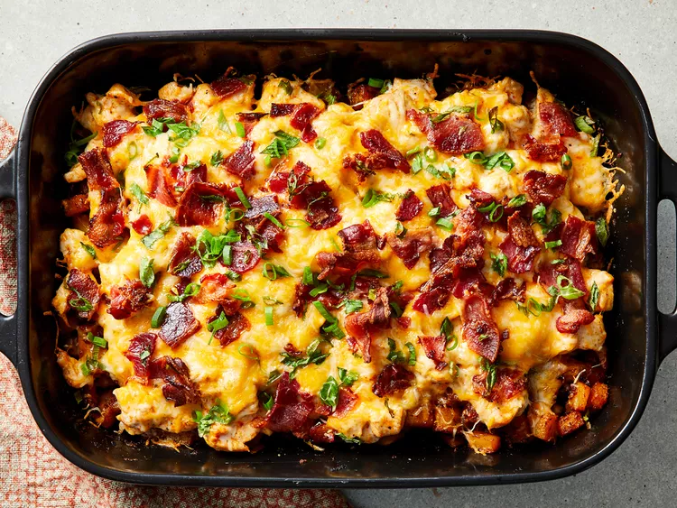

Home
Buffalo Chicken and Roasted Potato Casserole

Receipe for Casserole
This casserole combines the spice of Buffalo wings with the comfort of
baked potatoes. The roasted potatoes create a crispy base that holds up to
robust toppings. Reviewers suggest using premade Buffalo wing sauce as a
shortcut to save time.
Ingredients
- cooking spray
- 6 tablespoons hot pepper sauce
- ⅓ cup olive oil
- 2 tablespoons garlic powder
- 1 tablespoon freshly ground black pepper
- 1 tablespoon paprika
- 1 ½ teaspoons salt
- 8 potatoes, cut into 1/2-inch cubes
-
2 pounds skinless, boneless chicken breast halves, cut into 1/2-inch
cubes
-
2 cups shredded Mexican cheese blend (such as Great Value Fiesta Blend®)
- 1 cup crumbled cooked bacon
- 1 cup diced green onions
Steps
- Gather all ingredients.
-
Preheat the oven to 500 degrees F (260 degrees C). Spray a 9x13-inch
baking dish with cooking spray.
-
Heat hot pepper sauce, olive oil, garlic powder, black pepper, paprika,
and salt in a large skillet over low heat, stirring until thoroughly
combined. Turn off heat.
-
Toss potatoes in batches with the hot pepper sauce mixture to coat and
use a slotted spoon to transfer potatoes to the prepared baking dish.
Leave remaining sauce in the skillet.
-
Mix chicken into remaining sauce and allow to marinate while potatoes
roast.
-
Bake potatoes until tender inside and crisp and brown outside, 45 to 50
minutes, stirring every 10 to 15 minutes.
- Reduce oven heat to 400 degrees F (205 degrees C).
- Spread chicken cubes over roasted potatoes.
-
Sprinkle shredded cheese, cooked bacon, and green onions over chicken.
Return to the oven.
-
Bake in oven until chicken is cooked through and the cheese topping is
bubbling, about 15 minutes.